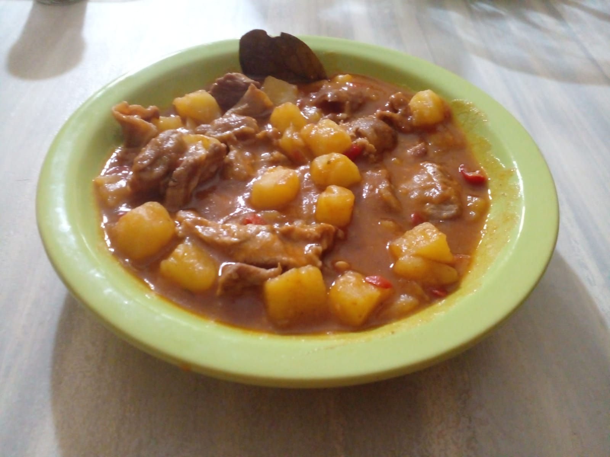

Este guiso tradicional es ideal para entrar en calor en los días más fríos del año.
Ingredientes (para 4 personas):
- 1 Kg de pechito de cerdo (o algún otro corte de cerdo para guiso)
- 750 g de papas
- 2 dientes de ajo
- 250 g de cebolla
- 150 g de morrón rojo
- Aceite de oliva
- 2 hojas de laurel
- 2 cucharaditas de pimentón dulce
- 500 g de puré de tomate
- 1 litro de caldo (de carne, pollo, verdura, o en su defecto simplemente agua)
- Sal y pimienta a gusto
- (Experimental) 2 cucharaditas de pulpa de pimiento choricero

Preparación:
-
Preparar todos los ingredientes: cortar el cerdo en cubos medianos y salpimentarlos,
el morrón en cuadraditos pequeños.
-
Hervir las papas en una olla con agua y sal hasta que estén al dente
(aproximadamente 15/20 minutos, cuando los bordes de los cubitos se empiecen a
redondear es que ya están listas). Retirar del fuego, escurrir y reservar.
-
Mientras hierven las papas, poner otra olla a fuego fuerte con un chorro de aceite
de oliva y dorar los cubos de cerdo durante 5 minutos. Retirar y reservar.
-
En la misma olla del cerdo, bajar a fuego medio y agregar un chorro más de
aceite de oliva. Añadir el ajo picado y dejar sofreir unos segundos (ojo
que no se queme).
-
Agregar la cebolla, las hojas de laurel y una pizca de sal. Mezclar bien con
una espátula o cuchara de madera y dejar cocinar 5 minutos. Al mezclar,
se debe ir raspando el fondo de la olla para que se desprendan los restos
de cerdo que quedaron pegados.
-
Añadir el morrón, mezclar y dejar cocinar otros 7 minutos hasta que estén
bien blandito. Después, añadir la pulpa de pimiento choricero y el pimentón.
Mezclar rápidamente con el sofrito y enseguida agregar el puré de tomate.
Volver a mezclar y dejar cocinar durante 2 minutos.
-
Incorporar el cerdo a la olla y mezclar bien.
-
Añadir el caldo, un poco de sal y llevar a ebullición. Bajar el fuego a
medio/bajo y dejar cocinar el guiso durante 20 minutos con la olla
tapada.
-
Incorporar las papas al guiso y mezclar bien.
¡Listo! Se puede servir para comer en el momento, o dejar reposar y recalentar
al día siguiente para que los sabores se asienten.
Una alternativa: en vez de hervir las papas por separado,
se pueden agregar crudas al guiso en el útimo paso y dejar cocinar con la olla
tapada hasta que estén al punto justo. Este camino tarda más, pero las papas
absorben los sabores del guiso con una mayor intensidad.